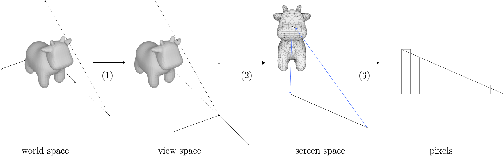

Things I did in March 2024
Differentiable rendering, gaussian splatting, neural graphics, oh my!
I want to start posting more of what I explore in the spirit of accountability and Andrew Healey's Recent Projects I Didn't Finish. This post looks back on what I did in March, which was a month of a lot of reading and a little bit of building.
Differentiable Rendering
The first big topic that I explored was differentiable rendering. This is a relatively new technology which lets you obtain gradients of pixel values output by a renderer with respect to scene parameters. Two recent breakthroughs in 3D reconstruction (gaussian splatting and neural radiance fields) are direct applications of differentiable rendering to different graphics primitives.
Diagram of rasterization from my differentiable rendering blog post.
Classic rasterization is not differentiable; pixels are samples of objects which can occlude each other or move a bit to no longer cover a pixel. But we can formulate rasterization to be differentiable if we make occlusion and coverage "softer".
See Adventures with Differentiable Mesh Rendering for more: with the right formulation, we can write a program which optimizes the rotation of a teapot to look like a given 2D image, or fit the vertices of a spherical mesh to look like an image of a cow.
In retrospect, mesh rendering is not the most promising differentiable rendering technique. The gradients it provides are noisy, and mesh fitting with it is too constrained, since you generally need to know the topology of the result ahead-of-time. But I had a lot of fun implementing it and re-learning how rendering works from first principles (see also: Perspective-Correct Interpolation).
Gaussian Splatting
In March I read about 3D gaussian splatting via Aras-P's blog posts introducing the tech and the explosion of activity in the ecosystem.

Left: Gaussian splat representation of a bicycle scene. Right: Same with the splats rendred opaque.
Gaussian splatting is the most recent hotness in 3D reconstruction; by applying differentiable rendering to gaussian point clouds, we can reconstruct a 3D representation of a scene given images of it with fidelity rivaling or surpassing the previous state-of-the-art in neural radiance fields and photogrammetry algorithms. Gaussian splats are fast, too. It takes minutes to train a splat scene on a consumer GPU compared to hours for NeRFs. They're finding more applications in graphics and vision.
I also read a lot of Gaussian splat papers, mostly focused on reconstruction, meshing, and relighting. Some of these are already covered in Aras-P's post, but the validating peer reviews/results have come out. Others are new. Below are ones that I found especially interesting.
Reconstruction
GaussianObject aids reconstruction of a single object by "fixing up" views of the object that don't quite look right with a diffusion model, then training the splats on the fixed views.
Reconstruction is the original application for splats. Since then there have been a few advances in increasing accuracy and reducing the number of input images needed. A promising direction is the use of image generation models like Stable Diffusion to synthesize views of the scene from more angles (see GaussianObject, FDGaussian).
Meshing
Triangle meshes are still king when it comes to making production 3D applications at scale, so it's important to be able to convert splat scenes to high-quality meshes. A paper that made a splash here recently was SuGaR: Surface-Aligned Gaussian Splatting (CVPR 2024), which first applies regularization during splat training to encourage the formation of smooth surfaces, then extracts meshes by running a Poisson reconstruction algorithm on the splats. An interesting idea here is an optional final step which instantiates splats on top of the mesh, then optimizes that hybrid representation for best results.
Relighting
Vanilla gaussian splats have their colors baked-in and cannot be relit realistically. Research into relighting them has to not only recover the lighting conditions of the scene, but also the material properties of the objects in it. And since lighting is also strongly influenced by surface geometry, relighting also requires that gaussians form coherent surfaces (and especially normals).
Relightable 3D Gaussian (Nov 2023) attempts both of these things, recovering explicit normals and improved implicit geometry, and estimating both scene lighting as well as materials of the gaussians (parameterized by the Disney BRDF model). I examine their results a bit more closely in my April blog post: Real-Time Lighting with Gaussian Splats.
Another paper which I didn't get the chance to dive into but which is equally cited and got an oral spot at CVPR 2024 is Relightable Gaussian Codec Avatars. This work focuses on building high-fidelity relightable head avatars that can be animated; the geometry of the head avatars is totally comprised of 3D gaussians, each gaussian has some lighting parameters associated, and all parameters are jointly optimized during 3D gaussian training on multiview video data of a person illuminated with known point light patterns.
Other
Spacetime Gaussian Feature Splatting (Dec 2023) reconstructs 4D scenes (e.g. videos where you can pan/move the camera) using Gaussians. You can check out some examples using Kevin Kwok's online viewer.
DreamGaussian (September 2023) landed a ICLR 2024 oral spot. It leverages the text-to-2D prior of image diffusion models to generate 3D models given a text prompt. It's a bit more complicated because it uses a method called "score distillation sampling", but basically it generates random views of a given text prompt, then trains a gaussian splat model on those views.
Finally, SplaTAM (Dec 2023, CVPR 2024) is a very cool application of Gaussian splats to robotics. Gaussian splats provide a volumetric way to reconstruct the world around a robot from a single optical camera, with experiments showing up to 2x performance in various SLAM tasks over existing methods.
Neural graphics primitives
Neural graphics primitives are another hot topic in computer graphics and vision. Broadly speaking, images are samples of some underlying visual signal (this could be a radiance field, geometric surface,
or even just image colors), and we can train a neural network on these samples to represent this underlying signal, which we can then use to do novel view synthesis, 3D reconstruction, and many of the
same tasks that we can use gaussian splats for
An image compressed to 76kb with a neural network
Max Slater's blog post is the best introduction I've seen to this topic. It starts off with the use case of image compression - if we're able to learn a neural representation of an image whose parameters take up less space than the image pixels, we've compressed the image. It also goes into further applications like learning 3D surfaces with neural SDFs, doing 3D reconstruction with neural radiance fields, and using neural radiance caching to accelerate real-time ray-tracing.
Left-to-right: RGB capture of David, NeuralAngelo's normal map, and the output 3D mesh.
Like gaussian splats, neural graphics primitives can also be meshed and relit. In fact, neural graphics primitives were the first to achieve the fidelity we're seeing with splats, and the tech is a bit more mature.
- NeuralAngelo (CVPR 2023), one of TIME's "Best Inventions of 2023", models the underlying surface of a set of images as a signed distance function and uses several tricks like a multi-resolution hash encoding of input points and coarse-to-fine optimization to make the learning objective as easy as possible.
- The SDF representation can be converted to a mesh using marching cubes or similar algorithms.
- Instant-angelo is an implementation claiming high-fidelity results with 20 minutes of training on real-world RGB videos on a single consumer GPU.
Computer graphics
March was also a month for me to re-learn computer graphics (and learn lots of stuff I didn't know before, like most of real-time rendering). A meta-resource I really liked was my former coworker Mike Turitzin's blog post on how to learn graphics. Some major takeaways for me:
- Computer graphics is a huge field with enough depth and active research that learning it can seem overwhelming.
-
Some learning approaches which can help a lot:
- Work on a project that you are very interested in, because interest will drive you to spend more time on it and learn more.
- Be ok with feeling dumb, including taking multiple passes over the same material to fully understand it, and reading multiple explanations of the same concepts.
-
It's not necessary to fully understand a topic, and can be better to only understand at some abstraction level - approach learning graphics topics as “peeling off layers of an onion”.
- Sometimes it's ok to implement things that you don't fully understand yet (e.g. coding up math formulas that still seem cryptic) - going into some “debt” is necessary to keep things moving.
- Make a list of things you implemented that you don't fully understand, and aim to learn more about them as you continue moving forward.
- Embrace building off the work of others - otherwise, you'll waste a lot of time coming up with sub-par solutions.
-
What learning will concretely look like:
- Reading lots of articles, blog posts, course notes, conference papers, forum posts, twitter threads, powerpoint slides, PhD theses, books, and videos of talks
- It's normal to sometimes waste lots of time trying to decipher a resource, but figure out later the author wasn't explaining well - eventually you'll develop a sense for when a resource sucks.
-
This scenario is very common:
- You have a new graphics problem to solve for a project.
- You need to learn the landscape of the problem to determine how to proceed. What are the SOTA solutions? What are the tradeoffs between quality, efficiency, and ease of implementation?
My favorite resource this month was learnopengl.com (the shadow and PBR tutorials are great).
I also really enjoyed watching these long graphics talks. The first is a 53 minute 2019 talk by Alexander Sannikov (who has his own Youtube Channel) on the techniques used in Path of Exile, with a special emphasis on the real-time global illumination approach:
And the classic 30 minute "Learning from Failure" talk by Alex Evans on all the different experimental renderers (using different primitives like SDFs, voxels, splats) that Media Molecule tried for Dreams (PS4). Still lots in both of these videos that I don't understand yet!
Other
Some non-technical reads I liked in March include:
- It's not Cancel Culture, it's Cancel Technology blog post by Noah Smith: In a nutshell, social ostracization has always been a thing, but the internet vastly changed the distribution (you could interact with many more strangers than ever before, which made it harder to "read the room" and opened you up to more attack) and memory (everything you say/do online is recorded, making it harder to reinvent yourself) of social interactions, hence cancel culture is less a cultural phenomenon and more a technological one.
- The Snakehead by Patrick Keefe: A nonfiction book written like a thriller about the wild world of illegal immigration from China to the US and the extensive organized networks of "snakeheads" (often based out of Chinatowns) that supported it. The book focuses on the twentieth century (through the spike in illegal immigration after the Tiananmen protests); it seems relevant again with the surge in Chinese illegal immigration since the pandemic.
- I'm Glad My Mom Died by Jennette McCurdy: A memoir by the actress for Sam from iCarly about growing up with intense pressure to become a star actress, an abusive private life that didn't reflect her external success at all, and the struggles of carving out a career of her own as an adult in the shadow of iCarly. Childhood stardom really ruins lives!